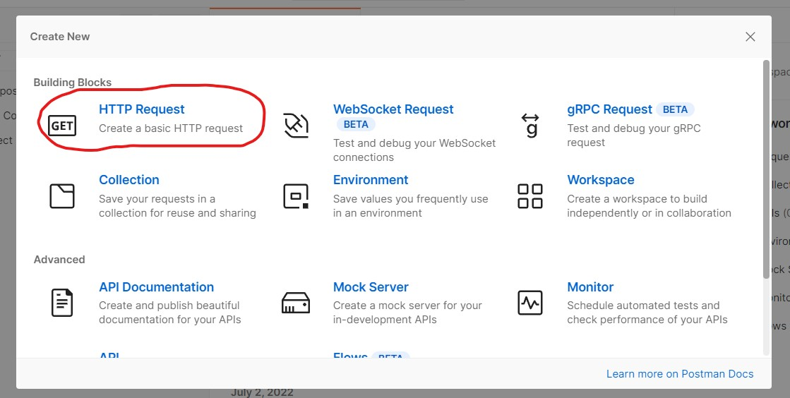
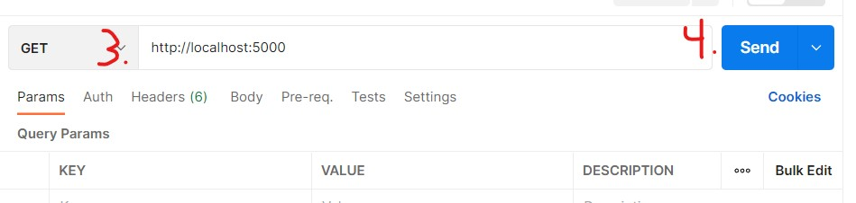
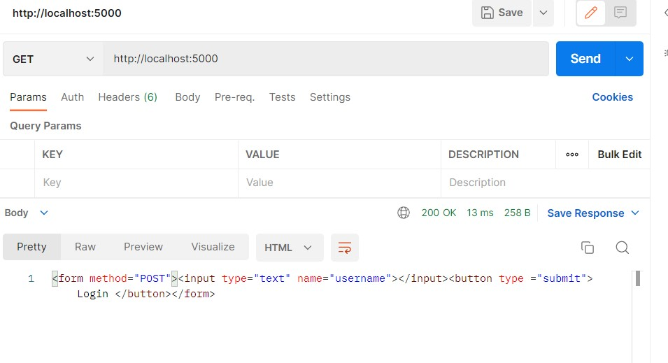
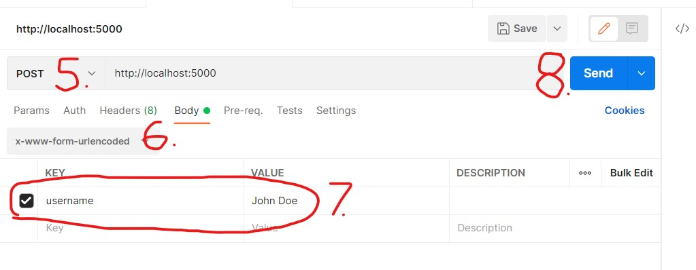
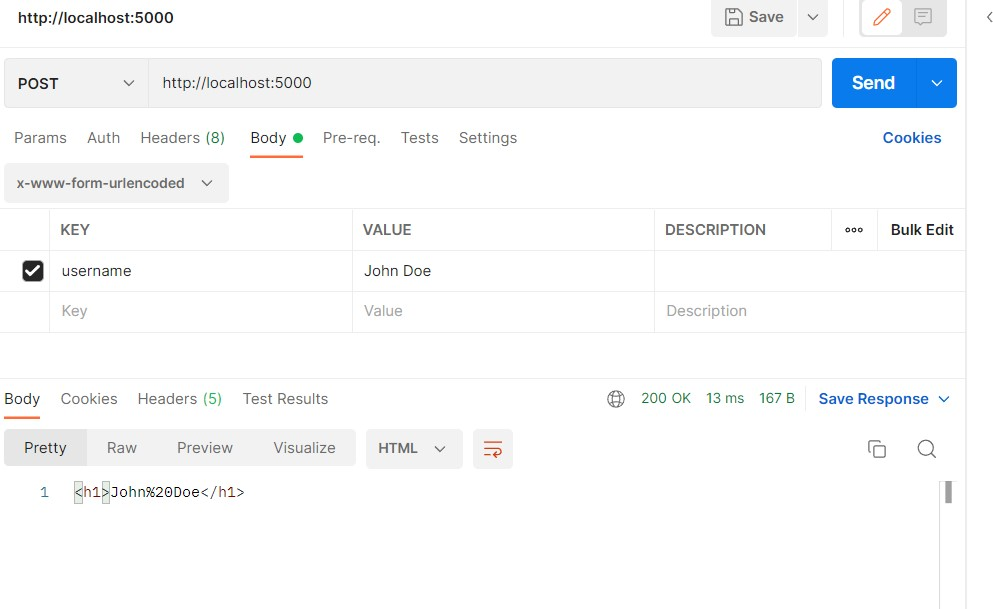
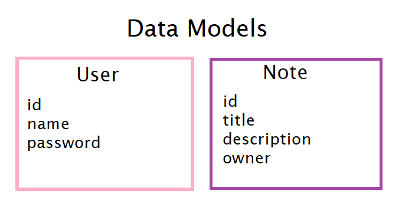
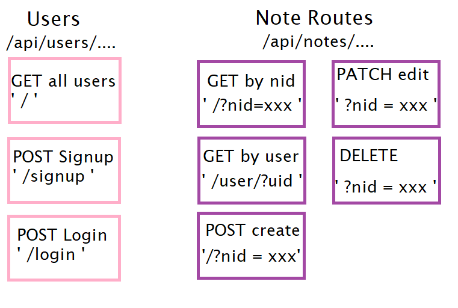

Creating Restful APIs with Express (Part 2)
Introduction
Last time we left off, we learned about web application architecture, RESTful APIs, Node.js, how to create a backend API with Node.js, and how to set up Express. Today, we will continue this by creating the same backend API that was created with only Node.js with Express, a small tutorial on postman, a more complete backend API that handles GET, POST, PATCH, and DELETE HTTP requests, and a couple of answers to questions I have received from the first blog.
Without further ado, lets continue!
Why Express over pure Node.js
In this brief video, I will contrast and compare a pure node.js backend and an express backend
Code for both of these can be found here. We will use this code in the next session
Postman and an introduction to Using Postman.
Postman is a backend API tool that is used to test back-end APIs. It can also be used for some methods of penetration testing/hacking, but we will be using this to test our API built with express. While that may sound like a lot, it is easy to install and use. To download, just follow the steps on this link . You may need to create an account to use postman, but they are free!
While I'll better explain this application through the video, I'll demonstrate some basics by testing the API that we previously created using Postman.
With server.js running in the background, complete the following steps,
1. Press the new button highlighted in the image (or press the new button in the file tab in the top left)

2. Select HTTP request. We are selecting this option because we are going to test how our backend handles different oncoming HTTP requests.
3. Make sure that the HTTP request is on get, and that the URL being tested (default URL) is in the text box.
4. Press send and observe the result. Notice that the result is the html document that is generated when the URL for the server is entered.
Result:
5. We are now going to send a post request. Change the request type to Post
6. Post requests are often sent with data. Change the datatype to "x-www-form-uriencoded". This is the default way forms send data.
7. Enter in the form data. In this example, the key is "username" (name of the field in form), and the value can be any name you want to display to the page (in this case, John Doe).
8. Send it off and observe the result. We have sent back to the user the generated HTML document that our back end would generate upon filling out the form and pressing submit.
Result:
While one may have an easier time testing this backend API through a browser, there are many instances where a backend may not return an html document. In-fact; a MERN stack encourages the re-rendering of a single page depending on the information being sent to it. In these applications, we send back data instead of a webpage, making it hard to see the result of the endpoint through a browser. Postman helps with this by displaying the data instead. We will touch on this more later in the blog.
Using Express to create a back-end API
In this segment, I will outline the plan that I have made for the web application and the endpoints we are going to cover. In the video, I'll demonstrate the completed application and postman connecting to those endpoints.
The plan is to make a note taking application. The application will have two types of data: Users and Notes. User's will consist of a name and a password. Notes will consist of an owner, a title, a description, and an ID. The structure of these objects would look like this:
One should be able to sign up for an account and login. For testing purposes, I'll add a back-end point that allows one to see all the users in the system. Users will also have the ability see all the notes available through their User ID, and to be able add, update, and delete notes through the notes note id. In addition, I'll add an end point to see a note by their ID. A technique that I like to employ for building a back-end API is to visually plan out what back-end points are required; so, let's do that!
From this diagram, it is easy to categorize our end points into two categories; end points that interact with user objects, and end points that interact with notes. It is important to identify these relationships so that we can better layout our backend API and apply filters to those endpoints if needed.
And that's the basics of planning a back-end API! I'll now go over the back end API I created in the following video.
Conclusion
And that's a wrap. I'm going to end this blog with a few more videos that explain some other related stuff to back-end APIs. Feel free to look at them! The code in them is from a project that some of my peer and I have been working on.
Hooking an express API to front end:
Related Links: More on HTTP Requests , More on Fetch
Hooking an express API to a Mongo Atlas Database:
Related Links: More on Mongo Atlas in Madhu's Blog, More on connecting express to mongo atlas
References
M. Schwarzmuller and M. Lorenz, "React, nodejs, Express and MongoDB - The Mern Fullstack Guide," Udemy. [Online]. Available: https://www.udemy.com/course/react-nodejs-express-mongodb-the-mern-fullstack-guide/